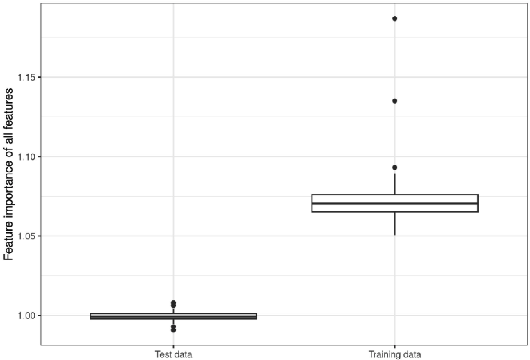
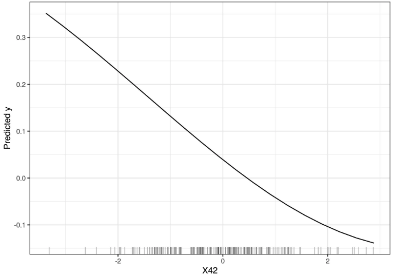
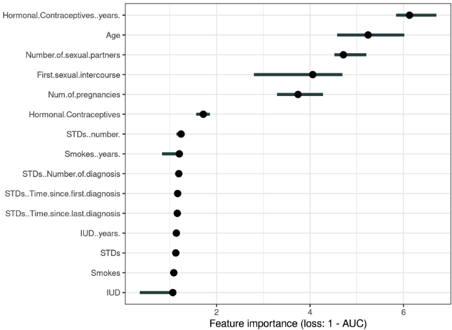
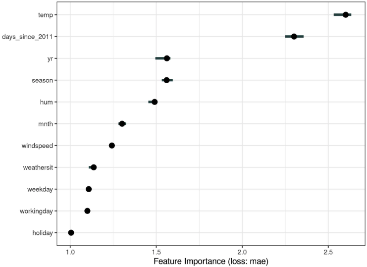

8.5 - Décomposition fonctionnelle
L’importance des caractéristiques de permutation mesure l’augmentation de l’erreur de prédiction du modèle après la permutation des valeurs de la caractéristique, ce qui rompt la relation entre la caractéristique et le résultat réel.
8.5.1 - Théorie
Le concept est très simple : nous mesurons l’importance d’une caractéristique en calculant l’augmentation de l’erreur de prédiction du modèle après permutation de la caractéristique. Une caractéristique est « importante » si le mélange de ses valeurs augmente l’erreur du modèle, car dans ce cas, le modèle s’est appuyé sur la caractéristique pour la prédiction. Une caractéristique est « sans importance » si le mélange de ses valeurs laisse l’erreur du modèle inchangée, car dans ce cas, le modèle a ignoré la caractéristique pour la prédiction. La mesure de l’importance des caractéristiques de permutation a été introduite par Breiman (2001)1 pour les forêts aléatoires. Sur la base de cette idée, Fisher, Rudin et Dominici (2018)2 ont proposé une version indépendante du modèle de l’importance des caractéristiques et l’ont appelée dépendance du modèle. Ils ont également introduit des idées plus avancées sur l’importance des fonctionnalités, par exemple une version (spécifique au modèle) qui prend en compte le fait que de nombreux modèles de prédiction peuvent bien prédire les données. Leur article mérite d’être lu.
L’algorithme d’importance des caractéristiques de permutation basé sur Fisher, Rudin et Dominici (2018) :
Entrée : modèle formé \(\hat{f}\), matrice de fonctionnalités \(X\), vecteur cible \(y\), mesure d’erreur \(L(y,\hat{f})\).
- Estimer l’erreur du modèle d’origine \(e_{orig} = L(y, \hat{f}(X))\) (par exemple erreur quadratique moyenne)
- Pour chaque caractéristique \(j \in \{1,...,p\}\) faire:
- Générer une matrice de fonctionnalités \(X_{perm}\) en permutant la fonctionnalité \(j\) et le vrai résultat \(y\).
- Estimer l’erreur \(e_{perm} = L(Y,\hat{f}(X_{perm}))\) basée sur les prédictions des données permutées.
- Calculer l’importance des caractéristiques de permutation sous forme de quotient \(FI_j= e_{perm}/e_{orig}\) ou de différence \(FI_j = e_{perm} - e_{orig}\).
- Trier les entités par \(FI\) décroissant.
Fisher, Rudin et Dominici (2018) suggèrent dans leur article de diviser l’ensemble de données en deux et d’échanger les valeurs de la caractéristique \(j\) des deux moitiés au lieu de permuter la caractéristique \(j\). C’est exactement la même chose que la permutation de la fonctionnalité \(j\), si vous y réfléchissez. Si vous souhaitez une estimation plus précise, vous pouvez estimer l’erreur de permutation de la caractéristique \(j\) en associant chaque instance à la valeur de la caractéristique \(j\) de chaque autre instance (sauf avec elle-même). Cela vous donne un ensemble de données de taille \(n(n-1)\) pour estimer l’erreur de permutation, et cela prend beaucoup de temps de calcul. Je ne peux recommander d’utiliser la \(n(n-1)\) méthode - que si vous souhaitez sérieusement obtenir des estimations extrêmement précises.
8.5.2 - Dois-je calculer l’importance des données de formation ou de test ?
tl;dr : Vous devriez probablement utiliser des données de test.
Répondre à la question sur les données de formation ou de test touche à la question fondamentale de savoir quelle est l’importance des fonctionnalités. La meilleure façon de comprendre la différence entre l’importance des fonctionnalités basée sur la formation et celle basée sur les données de test est un exemple « extrême ». J’ai entraîné une machine à vecteurs de support pour prédire un résultat cible continu et aléatoire étant donné 50 caractéristiques aléatoires (200 instances). Par « aléatoire », j’entends que le résultat cible est indépendant des 50 caractéristiques. C’est comme prédire la température de demain à partir des derniers chiffres de loterie. Si le modèle « apprend » des relations, il est alors surajusté. Et en fait, le SVM a surajusté les données d’entraînement. L’erreur absolue moyenne (abréviation : mae) pour les données d’entraînement est de 0,29 et pour les données de test de 0,82, ce qui est également l’erreur du meilleur modèle possible qui prédit toujours le résultat moyen de 0 (mae de 0,78). En d’autres termes, le modèle SVM est une poubelle. Quelles valeurs d’importance des fonctionnalités attendez-vous pour les 50 fonctionnalités de ce SVM suréquipé ? Zéro parce qu’aucune des fonctionnalités ne contribue à améliorer les performances sur des données de test invisibles ? Ou les importances devraient-elles refléter dans quelle mesure le modèle dépend de chacune des caractéristiques, que les relations apprises se généralisent ou non à des données invisibles ? Voyons en quoi les distributions des importances des fonctionnalités pour les données de formation et de test diffèrent.

Je ne sais pas lequel des deux résultats est le plus souhaitable. Je vais donc essayer de défendre les deux versions.
Le cas des données de test
Il s’agit d’un cas simple : les estimations d’erreurs de modèle basées sur les données d’entraînement sont des ordures -> l’importance des caractéristiques repose sur les estimations d’erreurs du modèle -> l’importance des caractéristiques basée sur les données d’entraînement est une ordure. En réalité, c’est l’une des premières choses que vous apprenez en apprentissage automatique : si vous mesurez l’erreur (ou les performances) du modèle sur les mêmes données sur lesquelles le modèle a été formé, la mesure est généralement trop optimiste, ce qui signifie que le modèle semble fonctionne bien mieux qu’il ne le fait en réalité. Et comme l’importance des caractéristiques de permutation repose sur des mesures de l’erreur du modèle, nous devrions utiliser des données de test invisibles. L’importance des fonctionnalités basée sur les données d’entraînement nous fait croire à tort que les fonctionnalités sont importantes pour les prédictions, alors qu’en réalité le modèle était simplement surajusté et les fonctionnalités n’étaient pas importantes du tout.
Le cas des données de formation
Les arguments en faveur de l’utilisation des données de formation sont un peu plus difficiles à formuler, mais à mon humble avis, ils sont tout aussi convaincants que les arguments en faveur de l’utilisation des données de test. Nous jetons un autre regard sur notre SVM poubelle. D’après les données d’entraînement, la fonctionnalité la plus importante était X42. Regardons un tracé de dépendance partielle de la fonctionnalité X42. Le tracé de dépendance partielle montre comment la sortie du modèle change en fonction des modifications de la fonctionnalité et ne repose pas sur l’erreur de généralisation. Peu importe que le PDP soit calculé avec des données d’entraînement ou de test.

Le graphique montre clairement que le SVM a appris à s’appuyer sur la fonctionnalité X42 pour ses prédictions, mais selon l’importance de la fonctionnalité basée sur les données de test (1), ce n’est pas important. Sur la base des données de formation, l’importance est de 1,19, ce qui reflète que le modèle a appris à utiliser cette fonctionnalité. L’importance des fonctionnalités basée sur les données d’entraînement nous indique quelles fonctionnalités sont importantes pour le modèle dans le sens où il en dépend pour faire des prédictions.
Dans le cadre de l’utilisation des données de formation, je voudrais introduire un argument contre les données de test. En pratique, vous souhaitez utiliser toutes vos données pour entraîner votre modèle afin d’obtenir au final le meilleur modèle possible. Cela signifie qu’il ne reste aucune donnée de test inutilisée pour calculer l’importance des fonctionnalités. Vous rencontrez le même problème lorsque vous souhaitez estimer l’erreur de généralisation de votre modèle. Si vous utilisiez la validation croisée (imbriquée) pour l’estimation de l’importance des caractéristiques, vous rencontreriez le problème que l’importance des caractéristiques n’est pas calculée sur le modèle final avec toutes les données, mais sur des modèles avec des sous-ensembles de données qui pourraient se comporter différemment.
Cependant, en fin de compte, je recommande d’utiliser les données de test pour l’importance des fonctionnalités de permutation. Parce que si vous souhaitez savoir dans quelle mesure les prédictions du modèle sont influencées par une fonctionnalité, vous devez utiliser d’autres mesures d’importance telles que l’importance SHAP.
Ensuite, nous examinerons quelques exemples. J’ai basé le calcul de l’importance sur les données de formation, car je devais en choisir une et l’utilisation des données de formation nécessitait quelques lignes de code en moins.
8.5.3 - Exemple et interprétation
Je montre des exemples de classification et de régression.
Cancer du col de l’utérus (classification)
Nous ajustons un modèle forestier aléatoire pour prédire le cancer du col de l’utérus. Nous mesurons l’augmentation de l’erreur de 1-AUC (1 moins l’aire sous la courbe ROC). Les caractéristiques associées à une erreur de modèle augmentée d’un facteur 1 (= aucun changement) n’étaient pas importantes pour prédire le cancer du col de l’utérus.

La caractéristique la plus importante était celle des contraceptifs hormonaux..années. associé à une augmentation d’erreur de 6,13 après permutation.
Partage de vélos (régression)
Nous ajustons un modèle de machine à vecteurs de support pour prédire le nombre de vélos loués, en fonction des conditions météorologiques et des informations du calendrier. Comme mesure d’erreur, nous utilisons l’erreur absolue moyenne.

8.5.4 Avantages
Belle interprétation : l’importance d’une fonctionnalité est l’augmentation de l’erreur de modèle lorsque les informations de la fonctionnalité sont détruites.
L’importance des fonctionnalités fournit un aperçu global hautement compressé du comportement du modèle.
Un aspect positif de l’utilisation du taux d’erreur au lieu de la différence d’erreur est que les mesures de l’importance des caractéristiques sont comparables entre différents problèmes .
La mesure d’importance prend automatiquement en compte toutes les interactions avec d’autres fonctionnalités. En permutant la fonctionnalité, vous détruisez également les effets d’interaction avec d’autres fonctionnalités. Cela signifie que l’importance des fonctionnalités de permutation prend en compte à la fois l’effet des fonctionnalités principales et les effets d’interaction sur les performances du modèle. Ceci constitue également un inconvénient car l’importance de l’interaction entre deux caractéristiques est incluse dans les mesures d’importance des deux caractéristiques. Cela signifie que l’importance des fonctionnalités ne correspond pas à la baisse totale des performances, mais que la somme est plus importante. Ce n’est que s’il n’y a pas d’interaction entre les caractéristiques, comme dans un modèle linéaire, que les importances s’additionnent approximativement.
L’importance des fonctionnalités de permutation ne nécessite pas de recyclage du modèle. Certaines autres méthodes suggèrent de supprimer une fonctionnalité, de recycler le modèle, puis de comparer l’erreur du modèle. Étant donné que le recyclage d’un modèle d’apprentissage automatique peut prendre beaucoup de temps, « seule » permuter une fonctionnalité peut faire gagner beaucoup de temps. Les méthodes d’importance qui recyclent le modèle avec un sous-ensemble de fonctionnalités semblent intuitives à première vue, mais le modèle avec les données réduites n’a aucun sens pour l’importance des fonctionnalités. Nous nous intéressons à l’importance des fonctionnalités d’un modèle fixe. Le recyclage avec un ensemble de données réduit crée un modèle différent de celui qui nous intéresse. Supposons que vous entraîniez un modèle linéaire clairsemé (avec Lasso) avec un nombre fixe d’entités avec un poids non nul. L’ensemble de données comporte 100 fonctionnalités, vous définissez le nombre de poids non nuls sur 5. Vous analysez l’importance de l’une des fonctionnalités qui ont un poids non nul. Vous supprimez la fonctionnalité et recyclez le modèle. Les performances du modèle restent les mêmes car une autre fonctionnalité tout aussi intéressante obtient un poids non nul et votre conclusion serait que la fonctionnalité n’était pas importante. Autre exemple : le modèle est un arbre de décision et nous analysons l’importance de la fonctionnalité qui a été choisie comme première division. Vous supprimez la fonctionnalité et recyclez le modèle. Puisqu’une autre caractéristique est choisie comme première division, l’arbre entier peut être très différent, ce qui signifie que nous comparons les taux d’erreur d’arbres (potentiellement) complètement différents pour décider de l’importance de cette caractéristique pour l’un des arbres.
8.5.5 - Inconvénients
L’importance des caractéristiques de permutation est liée à l’erreur du modèle. Ce n’est pas mauvais en soi, mais dans certains cas, ce n’est pas ce dont vous avez besoin. Dans certains cas, vous préférerez peut-être savoir dans quelle mesure la sortie du modèle varie pour une fonctionnalité sans considérer ce que cela signifie en termes de performances. Par exemple, vous souhaitez connaître la robustesse de la sortie de votre modèle lorsque quelqu’un manipule les fonctionnalités. Dans ce cas, vous ne seriez pas intéressé par la diminution des performances du modèle lorsqu’une fonctionnalité est permutée, mais par la part de la variance de sortie du modèle qui est expliquée par chaque fonctionnalité. La variance du modèle (expliquée par les caractéristiques) et l’importance des caractéristiques sont fortement corrélées lorsque le modèle généralise bien (c’est-à-dire qu’il ne sur-ajuste pas).
Vous devez avoir accès au véritable résultat. Si quelqu’un vous fournit uniquement le modèle et les données non étiquetées – mais pas le véritable résultat – vous ne pouvez pas calculer l’importance des caractéristiques de permutation.
L’importance de la fonctionnalité de permutation dépend du mélange de la fonctionnalité, ce qui ajoute du caractère aléatoire à la mesure. Lorsque la permutation est répétée, les résultats peuvent varier considérablement. Répéter la permutation et faire la moyenne des mesures d’importance au fil des répétitions stabilise la mesure, mais augmente le temps de calcul.
Si les caractéristiques sont corrélées, l’importance des caractéristiques de permutation peut être biaisée par des instances de données irréalistes. Le problème est le même que pour les tracés de dépendance partielle : la permutation des caractéristiques produit des instances de données improbables lorsque deux ou plusieurs caractéristiques sont corrélées. Lorsqu’elles sont positivement corrélées (comme la taille et le poids d’une personne) et que je mélange l’une des caractéristiques, je crée de nouvelles instances peu probables, voire physiquement impossibles (personne de 2 mètres pesant 30 kg par exemple), et pourtant j’utilise ces nouvelles instances pour en mesurer l’importance. En d’autres termes, pour l’importance de la caractéristique de permutation d’une caractéristique corrélée, nous considérons dans quelle mesure les performances du modèle diminuent lorsque nous échangeons la caractéristique avec des valeurs que nous n’observerions jamais dans la réalité. Vérifiez si les caractéristiques sont fortement corrélées et soyez prudent quant à l’interprétation de l’importance des caractéristiques si elles le sont. Cependant, les corrélations par paires pourraient ne pas suffire à révéler le problème.
Autre chose délicate : l’ajout d’une fonctionnalité corrélée peut diminuer l’importance de la fonctionnalité associée en répartissant l’importance entre les deux fonctionnalités. Permettez-moi de vous donner un exemple de ce que j’entends par « diviser » l’importance des caractéristiques : nous voulons prédire la probabilité de pluie et utiliser la température à 8h00 de la veille comme caractéristique avec d’autres caractéristiques non corrélées. J’entraîne une forêt aléatoire et il s’avère que la température est la caractéristique la plus importante et tout va bien et je dors bien la nuit suivante. Imaginez maintenant un autre scénario dans lequel j’inclue en plus la température à 9h00 comme caractéristique fortement corrélée à la température à 8h00. La température à 9h00 ne me donne pas beaucoup d’informations supplémentaires si je connais déjà la température à 8h00. Mais avoir plus de fonctionnalités est toujours une bonne chose, n’est-ce pas ? J’entraîne une forêt aléatoire avec les deux caractéristiques de température et les caractéristiques non corrélées. Certains arbres de la forêt aléatoire captent la température de 8h00, d’autres la température de 9h00, encore d’autres les deux et encore d’autres aucune. Les deux caractéristiques de température réunies ont un peu plus d’importance que la caractéristique de température unique auparavant, mais au lieu d’être en haut de la liste des caractéristiques importantes, chaque température se situe désormais quelque part au milieu. En introduisant une caractéristique corrélée, j’ai fait passer la caractéristique la plus importante du haut de l’échelle d’importance à la médiocrité. D’une part, c’est très bien, car cela reflète simplement le comportement du modèle d’apprentissage automatique sous-jacent, ici la forêt aléatoire. La température à 8h00 est tout simplement devenue moins importante car le modèle peut désormais également s’appuyer sur la mesure à 9h00. D’un autre côté, cela rend l’interprétation de l’importance des caractéristiques considérablement plus difficile. Imaginez que vous souhaitiez vérifier les caractéristiques pour détecter les erreurs de mesure. Le contrôle coûte cher et vous décidez de vérifier uniquement les 3 principales caractéristiques les plus importantes. Dans le premier cas, vous vérifieriez la température, dans le second cas, vous n’incluriez aucune fonction de température simplement parce qu’elles partagent désormais l’importance. Même si les valeurs d’importance peuvent avoir un sens au niveau du comportement du modèle, cela prête à confusion si vous avez des fonctionnalités corrélées.
8.5.6 - Alternatives
Un algorithme appelé PIMP adapte l’algorithme d’importance des caractéristiques de permutation pour fournir des valeurs \(p\) pour les importances. Une autre alternative basée sur les pertes consiste à omettre la fonctionnalité des données d’entraînement, à recycler le modèle et à mesurer l’augmentation de la perte. Permuter une fonctionnalité et mesurer l’augmentation de la perte n’est pas le seul moyen de mesurer l’importance d’une fonctionnalité. Les différentes mesures d’importance peuvent être divisées en méthodes spécifiques au modèle et indépendantes du modèle. L’importance de Gini pour les forêts aléatoires ou les coefficients de régression standardisés pour les modèles de régression sont des exemples de mesures d’importance spécifiques au modèle.
Les mesures basées sur la variance constituent une alternative indépendante du modèle à l’importance des caractéristiques de permutation. Les mesures d’importance des caractéristiques basées sur la variance, telles que les indices de Sobol ou l’ANOVA fonctionnelle, accordent une plus grande importance aux caractéristiques qui entraînent une variance élevée dans la fonction de prédiction. L’importance SHAP présente également des similitudes avec une mesure d’importance basée sur la variance. Si la modification d’une fonctionnalité modifie considérablement le résultat, alors c’est important. Cette définition de l’importance diffère de la définition basée sur la perte, comme dans le cas de l’importance des caractéristiques de permutation. Cela est évident dans les cas où un modèle est suréquipé. Si un modèle surajuste et utilise une fonctionnalité qui n’est pas liée à la sortie, alors l’importance de la fonctionnalité de permutation attribuerait une importance de zéro car cette fonctionnalité ne contribue pas à produire des prédictions correctes. En revanche, une mesure d’importance basée sur la variance peut attribuer une importance élevée à la caractéristique, car la prédiction peut changer considérablement lorsque la caractéristique est modifiée.
Un bon aperçu des diverses techniques d’importance est fourni dans l’article de Wei (2015)3.
8.5.7 - Logiciel
Le iml package R a été utilisé pour les exemples. Les packages R DALEX et vip, ainsi que la bibliothèque Python alibi, scikit-learn et rfpimp, implémentent également l’importance des fonctionnalités de permutation indépendante du modèle.
Notes de bas de page
Breiman, Leo.“Random Forests.” Machine Learning 45 (1). Springer: 5-32 (2001).↩︎
Fisher, Aaron, Cynthia Rudin, and Francesca Dominici. “All models are wrong, but many are useful: Learning a variable’s importance by studying an entire class of prediction models simultaneously.” http://arxiv.org/abs/1801.01489 (2018).↩︎
Wei, Pengfei, Zhenzhou Lu, and Jingwen Song. “Variable importance analysis: a comprehensive review.” Reliability Engineering & System Safety 142 (2015): 399-432.↩︎